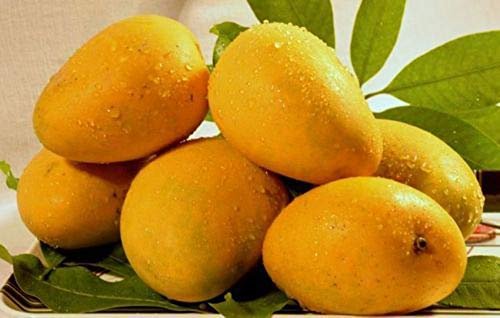

Fruits List
Apple

An apple is an edible fruit produced by an apple tree.Apple trees are large if grown from seed. Generally, apple cultivars are propagated by grafting onto rootstocks, which control the size of the resulting tree. There are more than 7,500 known cultivars of apples, resulting in a range of desired characteristics. Different cultivars are bred for various tastes and use, including cooking, eating raw and cider production.
Click to know more about apple...Mango
A mango is a stone fruit produced from numerous species of tropical trees belonging to the flowering plant genus Mangifera, cultivated mostly for their edible fruit. Most of these species are found in nature as wild mangoes.Worldwide, there are several hundred cultivars of mango. Depending on the cultivar, mango fruit varies in size, shape, sweetness, skin color, and flesh color which may be pale yellow, gold, or orange.
Click to know more about mango...Banana

A banana is an elongated, edible fruit - botanically a berry produced by several kinds of large herbaceous flowering plants in the genus Musa.In some countries, bananas used for cooking may be called "plantains", distinguishing them from dessert bananas. The fruit is variable in size, color, and firmness, but is usually elongated and curved, with soft flesh rich in starch covered with a rind, which may be green, yellow, red, purple, or brown when ripe.
Click to know more about banana...Orange

The orange is the fruit of various citrus species in the family Rutaceae it primarily refers to Citrus × sinensis,which is also called sweet orange, to distinguish it from the related Citrus × aurantium, referred to as bitter orange.The orange originated in a region encompassing Southern China, Northeast India, and Myanmar.
Click to know more about orange...